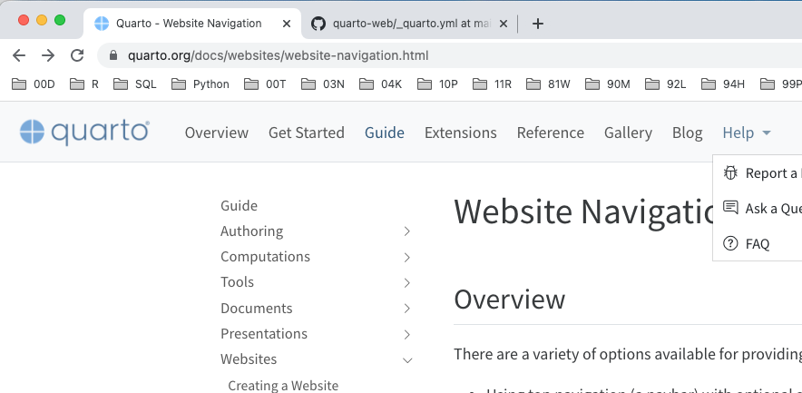

1 メモ書き
1.1 参考文献
- Rによるやさしい統計学 (Kindle) ## docsフォルダにRenderしたいとき
_quarto.yamlに下記の通り設定する
1.2 Combining R and Python with {reticulate} and Quarto
https://www.r-bloggers.com/2023/01/combining-r-and-python-with-reticulate-and-quarto/
1.3 A Quarto tip a day
投稿の仕方の参考になりそう。
https://mine-cetinkaya-rundel.github.io/quarto-tip-a-day/
1.4 How to write mathematics
1.5 htmlとmarkdownの両方に出力する方法
library(rmarkdown)
rmarkdown::render("statistics_01.Rmd",output_format = "html_document")
rmarkdown::render("statistics_01.Rmd",output_format = "md_document")1.6 Google analytics設定
下記に記載(Private repository)
https://github.com/Nobukuni-Hyakutake/hon/blob/main/quarto/memo.md
1.7 右側の目次
_quarto.ymlに下記を加えると右側にページ内の目次がでる。
format:
html:
toc: true1.8 Wordファイルに出力する方法
quarto render index.qmd --to docx 1.9 上部のナビゲージョンバーを入れ子にしたいとき
下記のHelpのように、クリックするとさらに選択肢が出てくるようにする

navbar:
background: light
logo: quarto.png
logo-alt: "Quarto logo."
title: false
collapse-below: lg
left:
- text: "Overview"
href: index.qmd
- text: "Get Started"
href: docs/get-started/index.qmd
- text: "Guide"
href: docs/guide/index.qmd
- text: Extensions
href: docs/extensions/index.qmd
- text: "Reference"
href: docs/reference/index.qmd
- text: "Gallery"
href: docs/gallery/index.qmd
- text: "Blog"
href: docs/blog/index.qmd
- text: "Help"
menu:
- text: "Report a Bug"
icon: "bug"
href: "https://github.com/quarto-dev/quarto-cli/issues"
- text: "Ask a Question"
icon: "chat-right-text"
href: "https://github.com/quarto-dev/quarto-cli/discussions"
- text: "FAQ"
icon: "question-circle"
href: docs/faq/index.qmd1.10 python list結合
# coding: utf-8
# 130秒でできた
import time
t1 = time.time()
import pandas as pd
fname = '../../big_csv/14gb_csv_sample.csv'
def preprocess(x): #必要な部分だけを取り出す前処理。ここでデータを削減しないと処理速度が上がらない。
x=x.loc[(x['0']<0.01),['1']]
return x
reader = pd.read_csv(fname,chunksize=100000)
df04=pd.concat((preprocess(r) for r in reader),ignore_index=True)
df04.to_csv('pandas_chunk_14gb_to_extract.csv')
t2 = time.time()
elapsed_time = round((t2-t1),1)
print(f"Elapsed time：{elapsed_time} s")